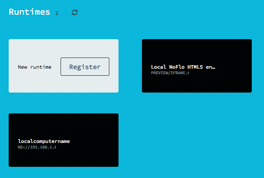
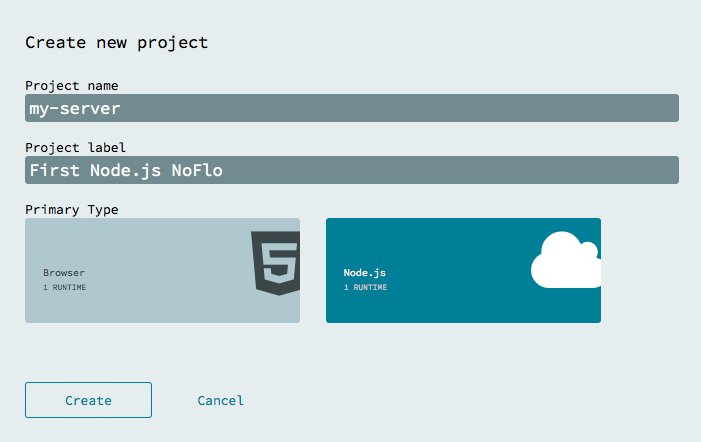
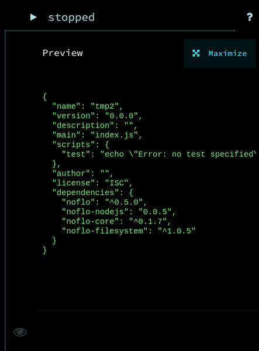
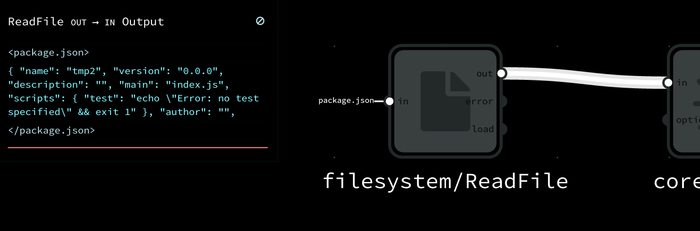

Getting started (Node.js)
This guide assumes that you know the basic operation of the Flowhub app. So if you haven’t done so, it is a good idea to start with the browser getting started guide.
Prepare a Node.js project on server-side
To use NoFlo on the server-side, you need to set up a Node.js project. Ensure that you have a working installation of Node.js 0.10 available. Then you can either add NoFlo to an existing project, or create a new one by:
$ mkdir noflo-example
$ cd noflo-example
$ npm init
Then install NoFlo itself with:
$ npm install noflo --save
Installing components
Unlike browser-side NoFlo, on Node.js we don’t supply any components by default. So, to get components into your project you need to install them locally via NPM. The NoFlo library listing gives a pretty good overview of the common libraries available.
To get started, we could install a set of components for filesystem access, and some “core” components.
$ npm install noflo-filesystem --save
$ npm install noflo-core --save
Connect your server to Flowhub
The Flowhub user interface communicates with your server-side NoFlo instance over WebSockets. For this, you need to install and set up the noflo-nodejs runtime. Start by installing it:
$ npm install noflo-nodejs --save
Then we need to configure it so that it becomes available in the Flowhub user interface. For this we need your Flowhub User Identifier. Get it with:
- Load app.flowhub.io
- Click “Login” and connect Flowhub with your TheGrid account
- Click “Settings” and take note of your User Identifier
Then you’re ready to configure your local runtime. This is done using the noflo-nodejs-init command. You can set up a port, a hostname or IP address, and you also need to provide your Flowhub User Identifier. For example, run:
$ node node_modules/.bin/noflo-nodejs-init --user <YOUR USER ID> --host localhost --port 3569 --label "Local NoFlo Test"
This will create a flowhub.json file inside your project. You’ll usually want to add this to your .gitignore. You can run noflo-nodejs-init --help to see all the possible configuration options.
Starting the runtime
Once you have a flowhub.json file, you can start the runtime with:
$ node node_modules/.bin/noflo-nodejs
This will read the configuration file and register the runtime with Flowhub. Go to Flowhub again and refresh the runtime list, and it will show up in your home screen under “Runtimes.”

Make a Flowhub project
- Under “Projects” click “Create”
- Give your project a name and label
- Choose “Node.js” as the primary type
 - Tap “Create” and the UI should load, showing a blank canvas
- Tap “Select runtime” and chose the runtime that is running on your machine
Make your first graph
Now you should see that Flowhub is connected to your Node.js runtime, and the library should show the server-side components.

To make a simple server-side filesystem read operation, you can simply add two components:
filesystem/ReadFilecore/Output
Now, connect the out port of the ReadFile node to the in port of the Output node:

Then you need to tell the ReadFile node which file to read. Click the node and enter an IIP to the in port. We could for example read the local project’s package.json file:

If you now start the graph by clicking the “Play” button on the top-right corner, and then open the preview panel on the right you can see the output that normally would’ve been sent to console.log by Node.js:

You can also see similar information by inspecting the connection itself:
